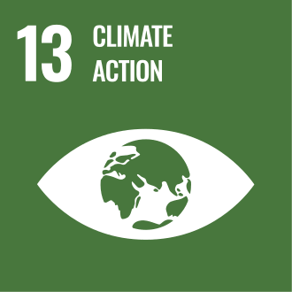

Introduction
although climate change is a known issue, the difficulties of identifying analyzing data can only be properly measured with the help of AI, to see the impacts on environments like forests, oceans, wildlife and the atmosphere.
Environmental monitoring is when you collect data on the state of nature, Ai is used mostly in machine learning, where it gains inductive knowledge through identifying patterns. Ai is useful because it can make manual, tedious tasks like monitoring, faster and more scalable, while also being able to work 24/7, but it has limits and works best with people as experts who are trained to use AI as a tool.
AI Applications in Climate Action
A common question that must be answered first is, why does environmental monitoring even matter? firstly, you can't act on what you don't know, with no data from the environment, local or global, organizations like the government or conservation groups wouldn't know what the environmental changes have been going on for, how fast they have changed and lastly how much they have changed over a period of time, so they couldn't adapt in time by for example cutting emissions or preparing for floods, because they can't see the issue.
Simply put Ai allows researchers to monitor wildlife at such a scale humans can't imitate.
Tuia et al (2022) argues that machine learning can help ecologists estimate animal population abundances and can help study animal behaviour, while also helping describe movement data from animals that have tracking devices to become more aware of human threats. [22]
Benefits and Opportunities
Without Ai monitoring through manual usage is slow and very expensive, from sending people to perform animal surveys, or divers to check water quality, check for near environmental damage through waste or oil spills, this can cause inaccuracies as well as being very expensive over time with quite small results to show for it.
So for a camera trap that takes thousands of photos over a period of time, it can takes days or weeks for a person to sort that, while a accurately trained Ai can do it much faster with potentially more accuracy. This means that less resources are used, the results are more clear and with more efficiency decisions can be made faster.
Lastly, in today's age there is way too much data to sort through, with satellite images and videos, sensors and cameras flood systems with a extreme surplus of information. Reichstein et al (2019) describes this as a flood of Earth System Data where analysis and sorting through it all has now lagged behind. [17]
Ai has become a lot better at finding patterns in climate data that may be hard for people to find, Reichstein et al. (2019) says that deep learning has improved specific areas like seasonal forecasting. [17]
Weather and climate connections happen across massive distances and for long periods of time, for example, changing conditions in a specific ocean region can impact rainfall from very far away, AI can learn to see the links between the data while making it easy to see and understand, giving the timestamps, the area affected and possibly the underlying cause and possible solutions, this simply is much harder to do manually.
A very important aspect that hasn't been covered yet is the action that comes after the data has been processed and analyzed, and yet with no surprise, AI can help with climate action as well. Rolnick et al. (2022) describes how AI (cited as ML, machine learning) can help reduced greenhouse gases and help society adapt to the changing climate, from the use of smart grids and in the case of extreme events, disaster management. [19]
Ai can be used widespread to help mitigate further emissions of greenhouse gases, for example, a large amount of greenhouse gases are caused by the production of electricity systems, which is human caused, AI can be used to forecast the weather on ideal locations for natural energy such as solar panels, dams or windmills for clean energy to stop emissions.
Challenges and Limitations
Although AI has proven extremely useful, there are still some limitations and risks that come with it that need to be handled with care.
Now with Ai in the picture, the main problem is no longer collecting and sorting the data but making sure we have the right interpretation of it.
firstly, AI can only ever be as good as the data it learns from, in Reichstein et al (2019) says that data driven approaches are highly dependent of the data quality it has, if an AI model is trained for a specific country or area, it may fail elsewhere, this leads to low adaptability as it simply cannot identify and analyse the data. [17]
This can lead to the AI giving either no info at all or worse case giving the wrong data, which can lead to failing solutions and predictions.
A limitation of AI is that it is dependent on people and can't replace them, in Tuia et al (2022) it says that success will require the mix of computer science and animal ecology, meaning if ecologists don't check the results, errors may go under the radar, plus the AI can only be as good as the person who's using it, if the person gives a misleading, unoptimized or faulty prompt the AI may not be able to compute and analyze the information as well as it could have done with better directions. [22]
Ai is useful because it can make manual, tedious tasks like monitoring, faster and more scalable, while also being able to work 24/7, but it has limits and works best with people as experts who are trained to use AI as a tool.
Once AI is fully realized and is able to adapt to unique environments and being properly trained and used by experts the full potential of AI will be realized and how we monitor environments and climates will change forever and the upside will be heavily favored over the costs and the downsides.